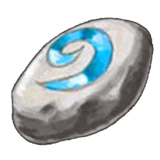

 Scroll of Teleportation
You burst out into an immense chamber, the walls of which cannot be seen. In the middle sits a golden ziggurat, its scale immense and its sheen creating a hazy golden aura. You follow the gold cobbled path from the hole from whence you emerged to find a strange wizard at the base of the structure.
He carries some fake poop in his hand. “This is the ticket to the DRAIN launch party,” he yells in Elvish, which you find yourself inexplicably able to understand.
Do you snatch the “ticket” out of his crusty hands?
Do you force yourself past him?
I'll take the ticket, you crusty sorcerer.
It’s hard to pin down what exactly Ken Kagami is trying to do. Running themes for the Japanese visual artist encompass brands like Supreme, regular household objects, strange reimaginations of familiar cartoon characters, and fake poop, but the list really stretches on indefinitely. Similar to the varied nature of his topical interests, Kagami also works liberally with medium, switching between photography, painting, sculpture, and illustration on a whim. However, everything he puts out is unquestionably connected by an overwhelming air of an often irreverent, yet finely sharpened, sense of humor.
Not much in terms of biographical detail can be found on Kagami, but in an interview with Ships Mag, he mentions his training as a stylist during university, a career which he then pursued for about six years before he pursued art full time. His career as an artist has flourished in the last decade or so though; he’s exhibited internationally in museums and during events like Frieze London, collaborated with Beams, Nike, kolor, and Popeye Magazine, started up his own store to sell strange miscellany and ephemera, and released multiple editions of the fan favorite Bart Works, where he strangely distorts the familiar Simpsons character.
In looking at Kagami’s work, there’s always a strange feeling of familiarity that comes with seeing it, perhaps derived from the cultural touchpoints he actively draws from, that complicates the entire viewing experience. In the illustration of Bart Works above, the rough outline of the normal Bart Simpson is clearly visible, but the piece becomes rather absurd with the literally inward turn of the character’s face, his eyes staring directly at the viewer. Although not entirely divorced from its original context, the piece charges its established notes of familiarity with something slightly discomforting, perhaps even confrontational in its gaze. In this sense, Kagami’s work resonates with the Freudian notion of the “uncanny.” Freud marks the “uncanny” as essentially the incorporation of the unfamiliar into what normally may be familiar to the viewer. As in Freud’s concept, Kagami’s pieces recontextualize the “familiars” of pop culture into vaguely unsettling, but humorously absurd visual experiences.
Part of Freud’s rhetoric, especially noted in criticism following its publication, focuses around its shifting of the burden of meaning and interpretation from the creator to the viewer. In relation to this, Kagami’s continuous irreverent streak absolutely captures the spirit of Freud’s implied shift. His work operates without frills, completely open about its references and inspirations, in turn forcing the viewer to respond to it in a deeply subjective manner. What is one supposed to do when face-to-face with a carefully constructed arrangement of fake poop and underwear on the floor? How does one view a strangely dressed monster with child-like bags, pithily titled “fashion blogger?”
Part of Freud’s rhetoric, especially noted in criticism following its publication, focuses around its shifting of the burden of meaning and interpretation from the creator to the viewer. In relation to this, Kagami’s continuous irreverent streak absolutely captures the spirit of Freud’s implied shift. His work operates without frills, completely open about its references and inspirations, in turn forcing the viewer to respond to it in a deeply subjective manner. What is one supposed to do when face-to-face with a carefully constructed arrangement of fake poop and underwear on the floor? How does one view a strangely dressed monster with child-like bags, pithily titled “fashion blogger?”
- C.C.

Out of my way you scourge!